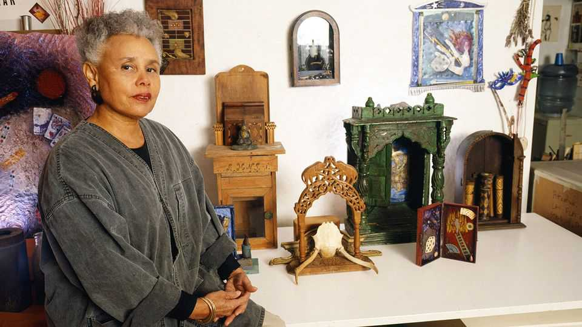

Betye Saar believed thrown-out objects should have a second life
The assemblage artist who challenged black stereotypes died on July 22nd, aged 99

Aug 6th 2026
Objects spoke to Betye Saar. As she browsed through yard sales and flea markets, something would catch her eye and ask to be used. A broken necklace, say, or a rusty dagger. An off-cut of wood, a remnant of coloured cloth, even a circuit board. A chipped ceramic of a cat, or a bundle of postcards. “Mother wit” would lead her to them. These things were not simply dead and discarded. They held the spirit of their previous owner, and had power. They would say, “You can make art with this.” So she did.
She had always been that way. Growing up in Watts, then separate from Los Angeles, she liked to hunt in the yard to find coloured beads, paper scraps or toys left behind. If she kept them tidily, her mother would not throw them away, so she preserved them as treasures. The Watts Towers were then going up in town, great spires of fantastical concrete and piping stuck all over with broken ceramics and glass. To her they were magic castles out of fairy tales. From so-called junk one man, Simon Rodia, had made something beautiful. So could she.
Some objects, though, came to speak to her louder than others. Rusty bird cages, lengths of chain, pieces of rope, worn-out alarm clocks. Model sailing boats of the old three-master kind and palmistry hands held up, as if in despair. All these shouted slavery, and a weight of history she could sense through her skin. Her "Dark Voyage" was a brick-like box that opened to show, on one side, a plan for the packing of men on a slave ship and, on the other, an African wood carving of an upright, sleeping man. His dreams, bright-coloured electrical wires, still played around his head.
Slavery's persistence in the black psyche became her most important theme. This included, most famously, her recreation of black mammies. In the 1960s they were easy to find on second-hand stalls, fat and widely smiling in aprons and kerchiefs, ready to clean white people’s houses and look after their children. They turned up as jars, figurines, tins, dolls and the jolly face on pancake-mix packets. As a black woman herself (though part-Irish and Choctaw), she decided in 1968, that year of rage, to transform one of them. Seizing on a metal memo-pad-holder of “Aunt Jemima” with a broom, she put a rifle in her other hand and, under her broom-arm, a hand-grenade. Her smiling face, with its huge scarlet lips, was made terrifying. Her slippered feet stood among cotton-bolls. A postcard displayed on her apron showed her dandling a crying white child, but it was now half-obliterated by a black-power fist. The title said it all: “The Liberation of Aunt Jemima”.
This small work touched a national nerve, and helped to make Betye Saar feel that at last she was an artist. Until then she had crafted “stuff” mostly for her family, as presents, or for the artist-circles she had joined on the design course at UCLA. (Back then, in the 1940s, black applicants were steered away from pure art, but she could at least help people choose curtains.) On her own initiative she became a print-maker, a painter and an enameller, all invaluable to make backgrounds for her constructions. She knew she was good at these things. But she didn’t consider herself a professional until “Jemima” made her name in the Black Arts Movement and, in 1974, the National Endowment for the Arts gave her a fellowship and a grant.
The gun-toting mammy also gave her a theme for life. In the 1990s she began to collect old washboards, each to be scathingly repurposed. Some, interspersed with padlocks, became her “Tower of Destiny”. In “Sunnyland (On the Dark Side)”, a Sunnyland washboard was decorated with a whirligig of a black laundress and a faint photograph of a lynching. In “A Lost Innocence”, a pretty vintage christening robe was sewn over at the hem with neat labels reading “Pickaninny”, “Tar baby”, and the like. She remembered how, looking at the cloak of an African chief decorated with hair from his subjects, she had felt what was almost an electric shock. She wanted that robe to do the same. Even embroidered handkerchiefs, such as those she inherited from her beloved Aunt Hattie in a huge trunk from which, of course, she kept everything, could be charged with the sadness of hemmed-in lives.
She had felt this herself. As a self-declared member of the black bourgeoisie, she wasn’t poor, and her light skin gave her a certain advantage. Nonetheless, she was the subject of “Black Girl’s Window”, one of her earliest pieces. In it, a coal-black girl stared out from the bottom half of an old window frame. Above her, smaller panes contained the moon, stars, a skeleton and a lion, Leo, her astrological sign. Her hands, pressing against the glass, were also covered with astrological symbols. All this seemed to ask what future even she, a can-do Leo, had. Tarot, palmistry, the random fall of playing cards, all intrigued her. So did magic, an interest reinforced by trips to Haiti and Africa. Not that she wanted to practise it herself, but she hoped her art might, evoking a mystical force. Her “Altars”, built like shrines to some random rescued figurine, were decked with candles and protecting eyes, as if for a ritual. She developed a lasting love of “haint blue”, almost navy-dark, which was supposed to keep ghosts at bay.
In her 90s she produced two large suspended works based on old canoes: “Gliding into Midnight” and “Drifting Toward Twilight”. Both were surrounded by haint-blue sea and sky. The first, a slave-canoe, carried pleading black ceramic hands; the second carried bird cages containing bones and branches, a calming homage to Nature. The boats spoke of transition, from place to place and also from lower to higher states of being. She liked to think of that as she worked, fuelled by Dr Pepper and pieces of watermelon, swapping out one object for another, preferably in silence. Yet ambient sounds were all around. Some came from her neighbours in Laurel Canyon, where she had lived for decades. Many more, rising sometimes to a clamour, came from the battered treasures in her studio, each begging her for new life. ■